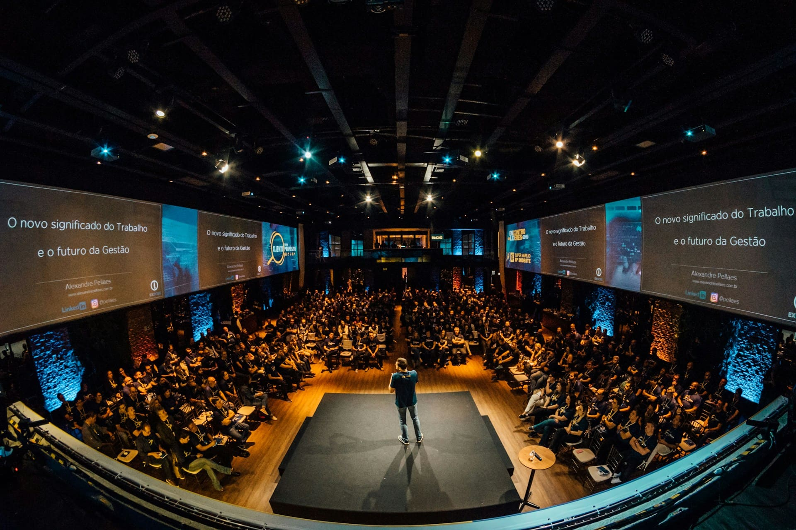

-

Seminario
Iberoamericano de
Ciencias Constitucionales
Un espacio de reflexión, diálogo y análisis sobre los grandes retos del constitucionalismo actual.
-
Moderadores
Integrados por personas que supervisa y guía interacciones, ya sea en un debate físico o en una plataforma digital, para asegurar que se cumplan las normas, se mantenga un ambiente respetuoso y se elimine el contenido inapropiado
-
Conferencias
Imágenes del seminario Iberoamericano de Ciencias Constitucionales.
-

Contáctanos
Estamos aquí para responder a tus preguntas, comentarios o sugerencias. Utiliza los métodos de nuestro sitio para ponerte en contacto con nuestro equipo
-
Galeria
Imágenes del seminario Iberoamericano de Ciencias Constitucionales.